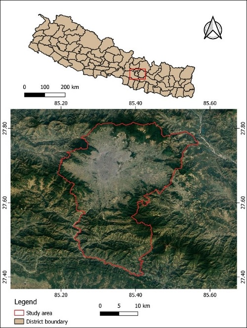
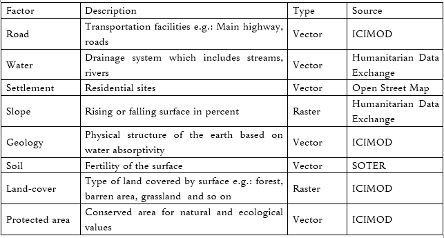
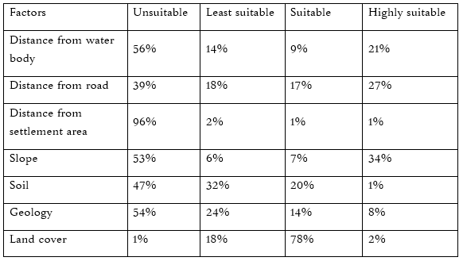
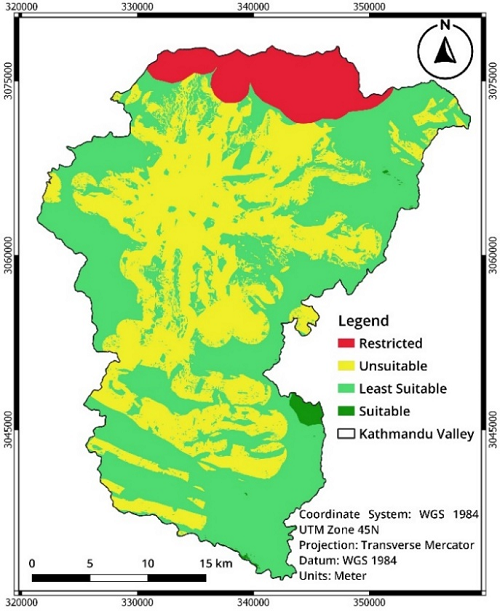

INTRODUCTION
Lack of appropriate solid waste management system, unplanned and increasing urbanization and increase in population has resulted in problems in selection and management of proper solid waste dumping sites in developing countries. Kathmandu valley, with an approximate population of 2.54 million and population growth rate of 6.5% per year, is one of the rapidly growing metropolitan cities in South Asia (Timsina et al., 2020). Selection of appropriate solid waste disposal sites should take many considerations such as cultural, environmental, social and spatial. For the analysis of such data, GIS technology can be useful as it allows users to store, process, analyze and handle big data both spatial and non-spatial (Kumar et al., 2014).
STUDY AREA
Figure: Boundary of Kathmandu Valley
DATA AND SOURCES
Table: Geospatial data used in the study
METHOD ADOPTED
For the evaluation, eight criteria were considered, among
them seven were factors (road network, water body
proximity, settlement proximity, slope, geology,
soil and landcover) and one was constraint (national
park). The factors were superimposed with AHP, which is
one of the widely used MCDM tool for processing
multiple important objectives and weighting the
criteria. Pair-wise comparison was carried out with nine-point
scale value which includes values 9, 8, 7, 6....,
1/7, 1/8, 1/9, which indicates 9 as extreme
preference, 7 as very strong preference, 5 as strong
preference and so on down to 1 which represents no
preference. The subjective judgment from AHP were checked via
consistency index. The consistency index (CI) was
calculated as:
CI = ( λmax - n ) / ( n - 1 ) --- (1)
Where CI = Consitency Index
λmax = maximum eigenvector of the matrix
n = order of the matrix
The random index for this study was 1.32 for 7 order of
matrix and the computed λmax was 7.511, generating
the consistency index of 0.085. The matrix was
found to be consistent as the CR was 0.064.
The final step involved multiplying each factors by
weight and aggregating them to determine global
rating. In this regard, the rating scale of 1 to 4 was
considered that indicates 1 as unsuitable, 2 as least
suitable, 3 as suitable and 4 as highly suitable. The
suitability was evaluated by weighted summation of
factors which is expressed by given formula
(Hwang & Yoon, 1981).
S = Σ 𝑊𝑖 𝐶𝑖 --- (2)
Where, 𝑊𝑖 = relative importance of weight given to
the factors
C𝑖 = criteria
RESULTS
Table: Area coverage of different factors
Out of total study area, about 56% area falls under unsuitable category in regards to water body because there are rivers like Bagmati, Bishnumati, Dhobi khola, Hanumante khola and Manohara khola which dissect the Kathmandu valley. 21% of the study area was found to be highly suitable for water body proximity factor. Similarly, most of the area in terms of road proximity and settlement proximity was found to be unsuitable for waste disposal because of the rapid increase in population growth, the settlement and road infrastructure have been tremendously established. Only 2% of the total study area lies under suitable and highly suitable in settlement proximity for waste disposal. Considering the slope factor, 34% of the total area falls under highly suitable category as Kathmandu valley is a valley itself which means there is low area land between hills. There is very less area that is highly suitable for waste disposal based on soil type because most of the area of Kathmandu valley has Silty Clay soil which is composed of intermediate sized particles that makes it fertile (KC & Dahal, 2020). Likewise, only 8% of the study area is highly suitable, followed by 12%, 24% and 54% as suitable, least suitable and unsuitable respectively. In the context of land cover, most of the area was found to be suitable for the waste disposal site.
Figure: Final Suitability Map
As a result, about 48% of the total study area was found to be restricted and unsuitable in which the restricted area lies on the northern part, whereas unsuitable area lies on the center and its surrounding part of the valley. These regions are mainly comprised of built-up areas with dense population and industrial sites. Thus, such areas should be excluded from the waste disposal site as it may lead to serious environmental and health problems. The least suitable site is about 51% of the total area and suitable site is about 1%. This means there are no highly suitable areas for waste disposal in Kathmandu valley.
CONCLUSION
Solid waste management
is one of the many problems that both developed
and developing countries face due to the growing
population. Kathmandu valley has a population
growth of 6.5% per annum. More population
produces more waste which needs to be managed
by authorities. The study showed that there is inadequate land for
the establishing waste disposal site in Kathmandu
valley. There should be adaptation of incisive
planning for the waste reduction policies. The
findings of this study could provide an important
statistic to the concerned authorities for planning,
maintenance and development of the waste disposal
sites.
The main limitation of this study is that all the data
used were obtained from secondary data sources.
Therefore, the used data may not be accurate and
relevant in the current context. It is recommended
that assessment of suitable sites for waste disposal
should be improved by incorporating more detailed,
robust and reliable data and methodology.
Furthermore, optimal site should be selected
considering further field investigation, geotechnical
and hydrological aspects, site lifespan and other
minuscule factors.
REFERENCES
The project was completed with joint action of: